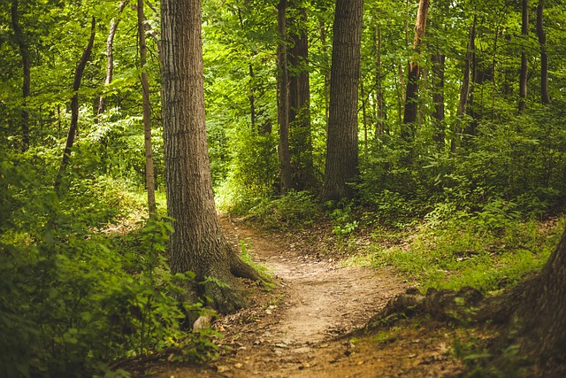

Caminhar em trilhas é uma das formas mais gostosas de se desconectar da rotina e recarregar as energias.
É aquela sensação incrível de respirar ar puro, ouvir o som da natureza e, de quebra, focar apenas no próximo passo, deixando os problemas para trás. Fora que cada subida mais desafiadora sempre compensa com uma vista lá do alto que nenhuma tela de celular consegue imitar. É o tipo de aventura simples que renova o corpo e a alma!
Não Acredita?
- Reduz o estresse num piscar de olhos
- Exercício sem neura
- Aumenta a criatividade e o foco